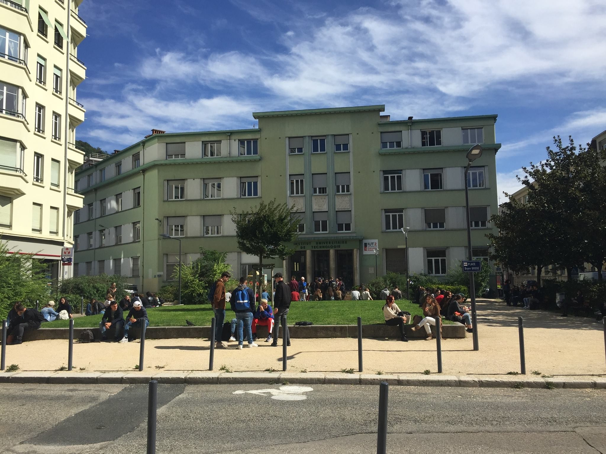
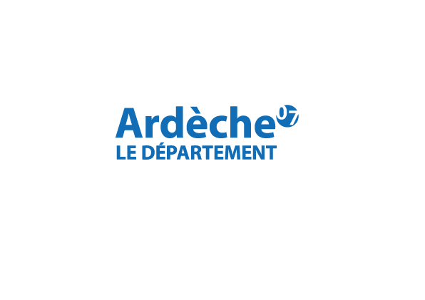

Mon Parcours
BUT Informatique – Université Grenoble Alpes (UGA)
J’ai suivi une formation en BUT Informatique à l’UGA, axée sur :
- - le développement de logiciels
- - le déploiement d’applications
- - l’optimisation de performances
- - le travail en équipe
- - la communication professionnelle
Ces compétences ont été mises en pratique dans des projets, réalisés en groupe ou individuellement, pour simuler des situations concrètes en entreprise.
Langages et technologies utilisés :
 HTML
HTML CSS
CSS PHP
PHP SQL
SQL Java
Java C++
C++
Apprentissage au Département de l’Ardèche – DSN (Direction des Systèmes Numériques)
Je réalise actuellement mon apprentissage au sein du Département de l’Ardèche, dans la DSN (Direction des Systèmes Numériques), plus précisément au pôle SI Social.
Ce pôle est responsable du maintien en état opérationnel des outils numériques utilisés par les agents des services sociaux.
Mes principales missions sont :
- Assurer la maintenance et le suivi des applications métiers liées aux services sociaux
- Participer à la gestion des incidents et à la résolution des problèmes techniques
- Collaborer avec les équipes pour améliorer les outils et adapter les solutions aux besoins des utilisateurs
- Contribuer à la documentation et à la formation des utilisateurs sur les nouveaux outils
- Participer à la veille technologique pour proposer des évolutions
Cette expérience me permet de développer mes compétences techniques tout en découvrant les enjeux du secteur public et le fonctionnement interne d’une administration.